Van kijkersvraag tot eigen format
HEY U! is het YouTube-format waarin professoren vragen van het internet beantwoorden. Wij bedachten het format, de naam en de complete visuele identiteit.
Van concept en naamgeving tot kleurenpalet, logomark, thumbnailsysteem en production design: één systeem voor Universiteit van Nederland.
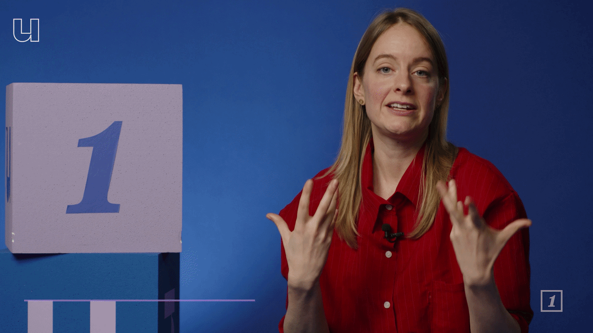
De opdracht
Universiteit van Nederland wilde kijkersvragen door wetenschappers laten beantwoorden. Wij bouwden daar geen losse graphics voor, maar een herkenbaar, herhaalbaar format.
Nieuw, maar onmiskenbaar Universiteit van Nederland. De bestaande merkprincipes werden het vertrekpunt voor een eigen wereld.
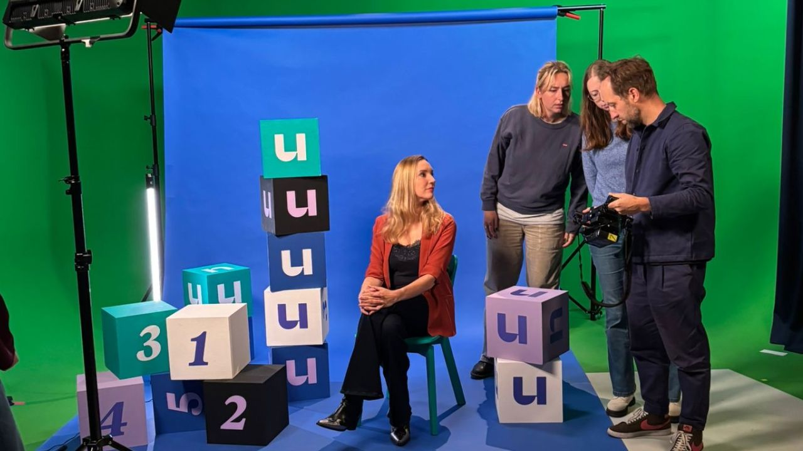
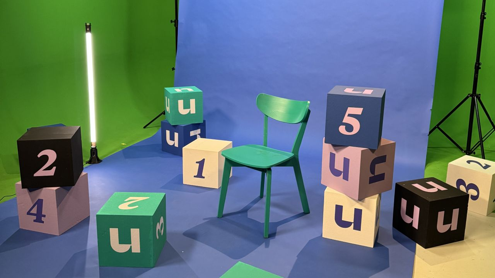
Onze aanpak
Set, kleur, camerahoeken, typografie en animatie ontwierpen we vanaf het eerste idee als één systeem.
De naam kwam uit een uitgebreid namingtraject. Daaromheen bouwden we het kleurenpalet, de logomark, het thumbnailsysteem en de production design.
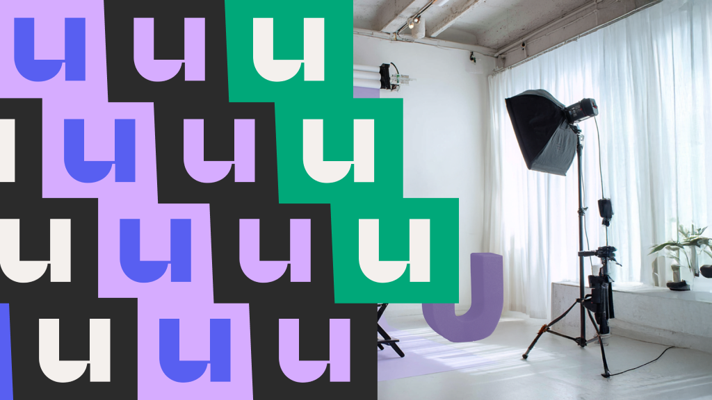
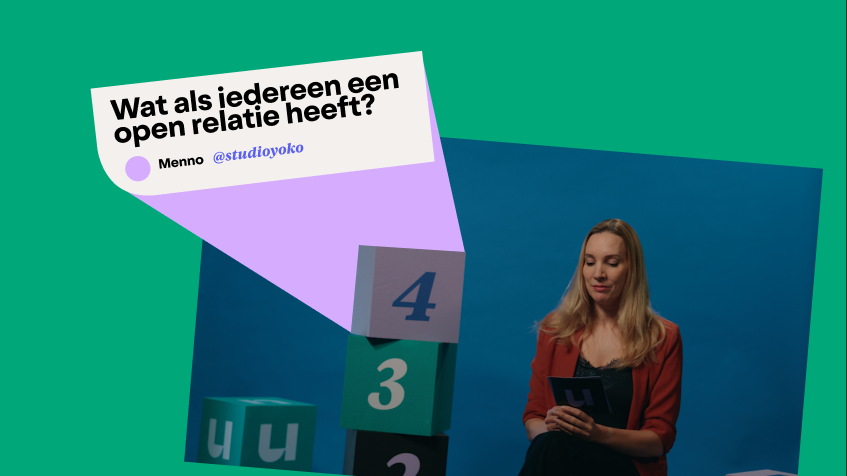
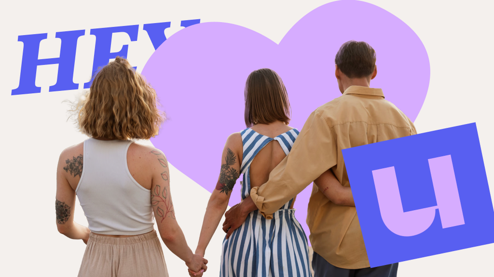
Wat we bouwden
Van de set tot de manier waarop een vraag verschijnt: elk onderdeel versterkt het antwoord en maakt elke aflevering direct herkenbaar.
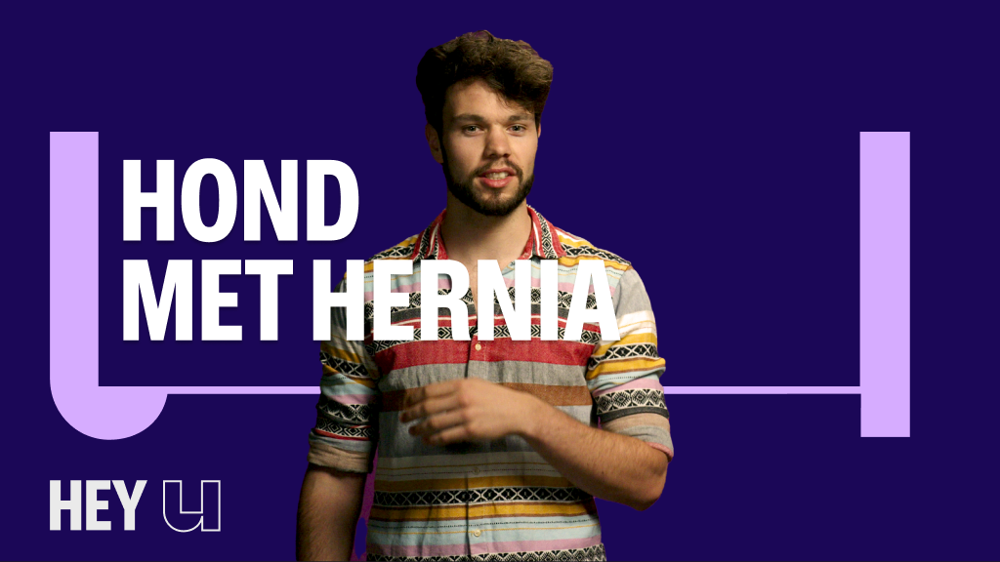
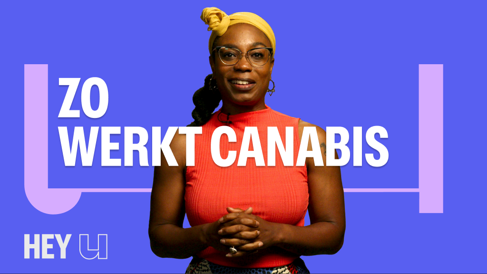
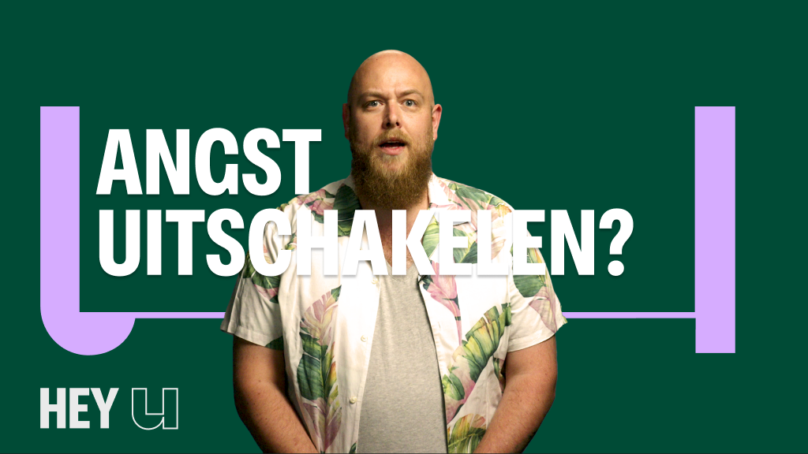
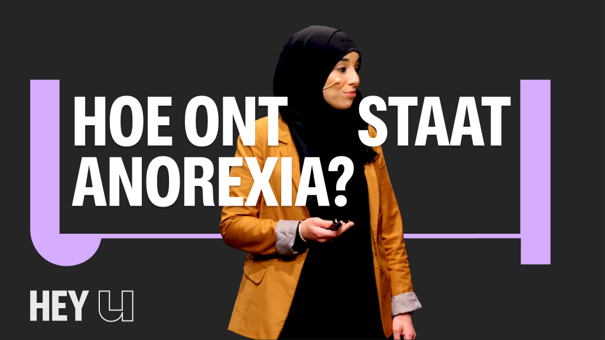
Het resultaat
Twaalf onderwerpen. Eén herkenbaar format. Vaste visuele regels geven herkenning; genoeg vrijheid voorkomt dat iedere aflevering hetzelfde voelt.
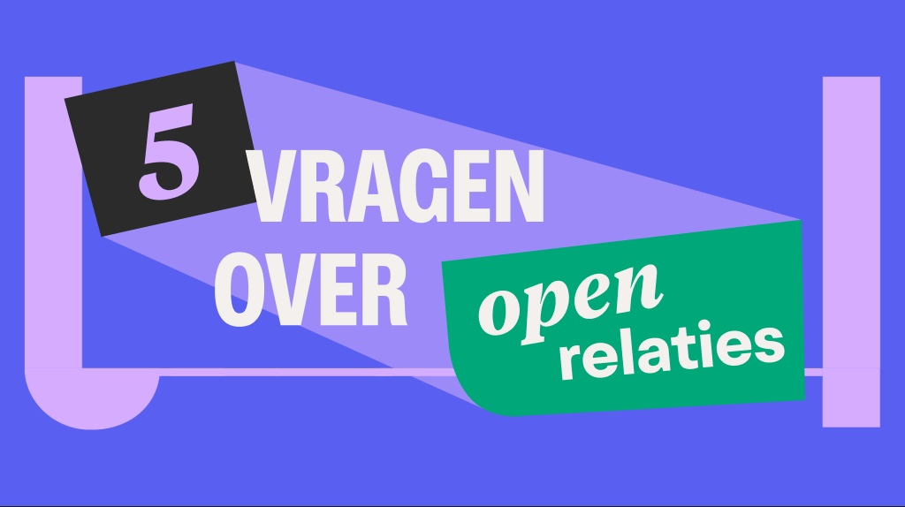
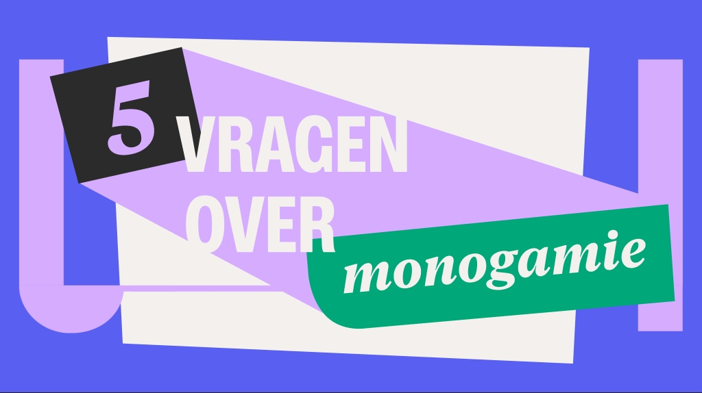